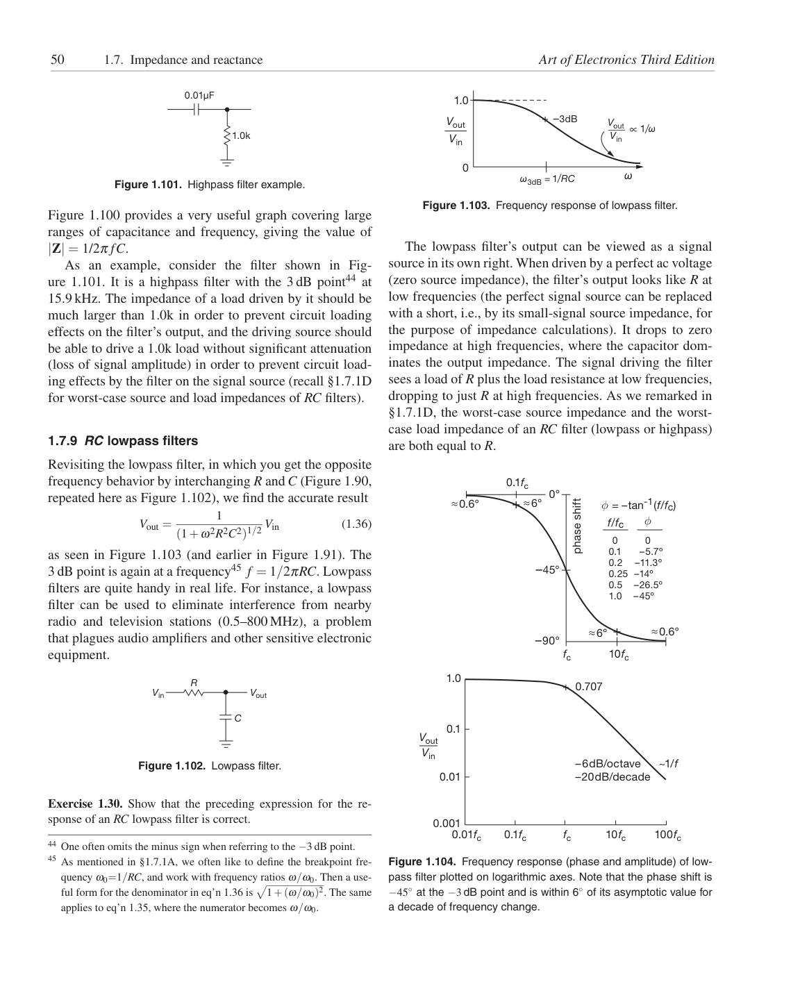

<!doctype html>
<html lang="en"><head><meta charset="utf-8"><meta name="viewport" content="width=device-width,initial-scale=1">
<title>Page 50 of 70</title><meta name="source-page" content="50"><link rel="stylesheet" href="../styles.css">
<link rel="prev" href="page-049.html"><link rel="next" href="page-051.html"></head><body>
<header><div><a class="back" href="../index.html">All pages</a> <span class="meta">Source page 50 / 70</span></div>
<nav class="nav" aria-label="Page navigation"><a href="page-049.html">Previous</a><a href="page-051.html">Next</a></nav></header>
<main><h1 class="meta">Page 50</h1><figure class="sheet"></figure>
<details class="transcript" open><summary>Fetchable text — page 50</summary><div class="text"><p>50
1.7. Impedance and reactance
Art of Electronics Third Edition</p><p>0.01μF</p><p>1.0</p><p>+ –3dB</p><p>Vout</p><p>Vout</p><p>1.0k</p><p>∝ 1/ω
Vin</p><p>Vin</p><p>0</p><p>ω3dB = 1/RC
ω</p><p>Figure 1.101. Highpass filter example.</p><p>Figure 1.103. Frequency response of lowpass filter.</p><p>Figure 1.100 provides a very useful graph covering large
ranges of capacitance and frequency, giving the value of
|Z| = 1/2π fC.</p><p>As an example, consider the filter shown in Figure 1.101. It is a highpass filter with the 3 dB point44 at
15.9 kHz. The impedance of a load driven by it should be
much larger than 1.0k in order to prevent circuit loading
effects on the filter’s output, and the driving source should
be able to drive a 1.0k load without significant attenuation
(loss of signal amplitude) in order to prevent circuit loading effects by the filter on the signal source (recall §1.7.1D
for worst-case source and load impedances of RC filters).</p><p>1.7.9 RC lowpass filters</p><p>The lowpass filter’s output can be viewed as a signal
source in its own right. When driven by a perfect ac voltage
(zero source impedance), the filter’s output looks like R at
low frequencies (the perfect signal source can be replaced
with a short, i.e., by its small-signal source impedance, for
the purpose of impedance calculations). It drops to zero
impedance at high frequencies, where the capacitor dominates the output impedance. The signal driving the filter
sees a load of R plus the load resistance at low frequencies,
dropping to just R at high frequencies. As we remarked in
§1.7.1D, the worst-case source impedance and the worstcase load impedance of an RC filter (lowpass or highpass)
are both equal to R.</p><p>0.1fc
0°</p><p>Revisiting the lowpass filter, in which you get the opposite
frequency behavior by interchanging R and C (Figure 1.90,
repeated here as Figure 1.102), we find the accurate result</p><p>≈0.6°
≈6°</p><p>+</p><p>= –tan-1(f/fc)</p><p>f/fc</p><p>Vout =
1
(1+ω2R2C2)1/2 Vin
(1.36)</p><p>phase shift</p><p>–45°</p><p>0
–5.7º
–11.3º
–14º
–26.5º
–45º</p><p>0
0.1
0.2
0.25
0.5
1.0</p><p>+</p><p>≈6°
≈0.6°</p><p>–90°</p><p>as seen in Figure 1.103 (and earlier in Figure 1.91). The
3 dB point is again at a frequency45 f = 1/2πRC. Lowpass
filters are quite handy in real life. For instance, a lowpass
filter can be used to eliminate interference from nearby
radio and television stations (0.5–800 MHz), a problem
that plagues audio amplifiers and other sensitive electronic
equipment.</p><p>10fc</p><p>fc</p><p>1.0</p><p>+ 0.707</p><p>R
Vin
Vout</p><p>C</p><p>0.1</p><p>Vout</p><p>Vin</p><p>~1/f</p><p>Figure 1.102. Lowpass filter.</p><p>0.01</p><p>–6dB/octave
–20dB/decade</p><p>Exercise 1.30. Show that the preceding expression for the response of an RC lowpass filter is correct.</p><p>10fc
100fc
fc
0.1fc
0.01fc
0.001</p><p></p><p>44 One often omits the minus sign when referring to the −3 dB point.
45 As mentioned in §1.7.1A, we often like to define the breakpoint frequency ω0=1/RC, and work with frequency ratios ω/ω0. Then a useful form for the denominator in eq’n 1.36 is</p><p>Figure 1.104. Frequency response (phase and amplitude) of lowpass filter plotted on logarithmic axes. Note that the phase shift is
−45◦at the −3 dB point and is within 6◦of its asymptotic value for
a decade of frequency change.</p><p>1+(ω/ω0)2. The same
applies to eq’n 1.35, where the numerator becomes ω/ω0.</p></div></details></main>
<footer>Visual layout, figures, tables, equations, footnotes, and original printed page number are preserved in the lossless page image. <a href="../text/page-050.txt">Plain text</a> · <a href="../data/page-050.json">JSON</a></footer>
</body></html>